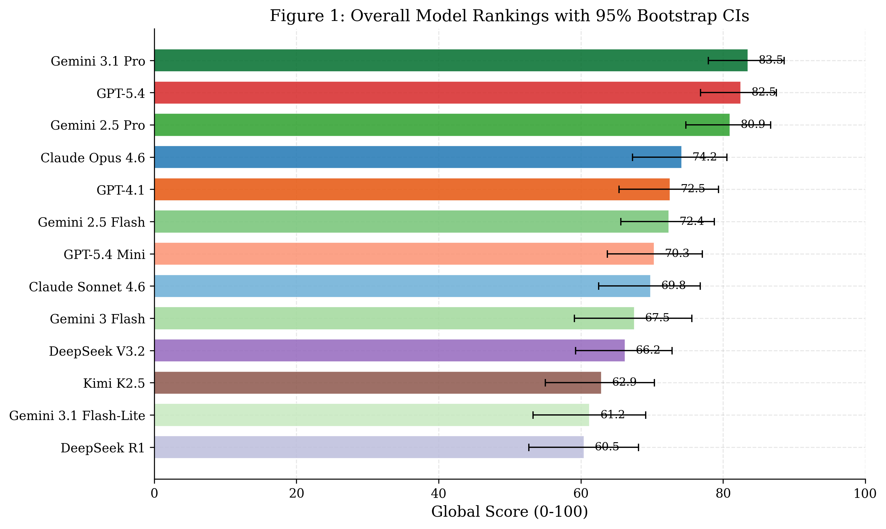
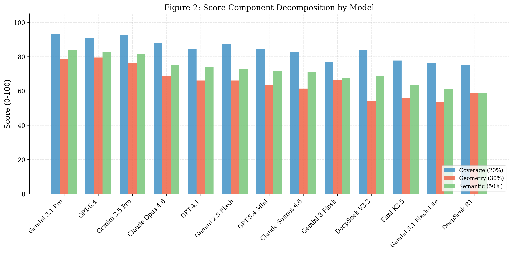
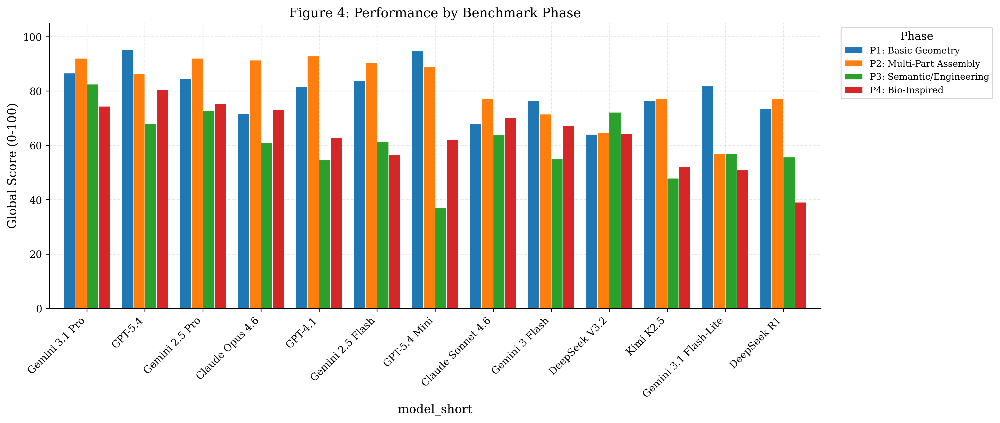
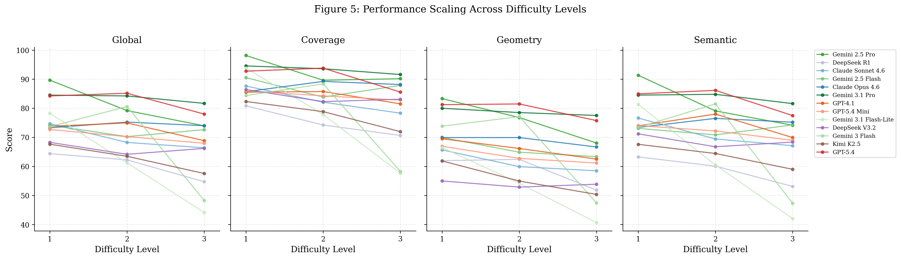
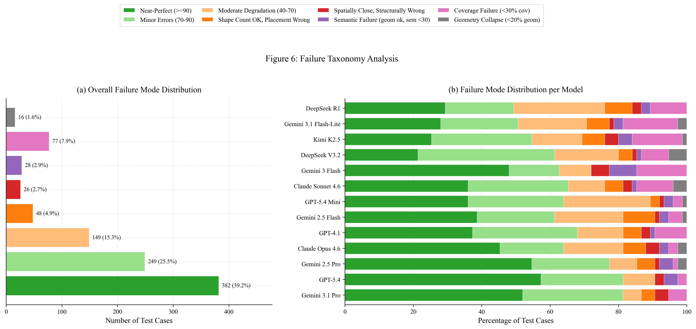
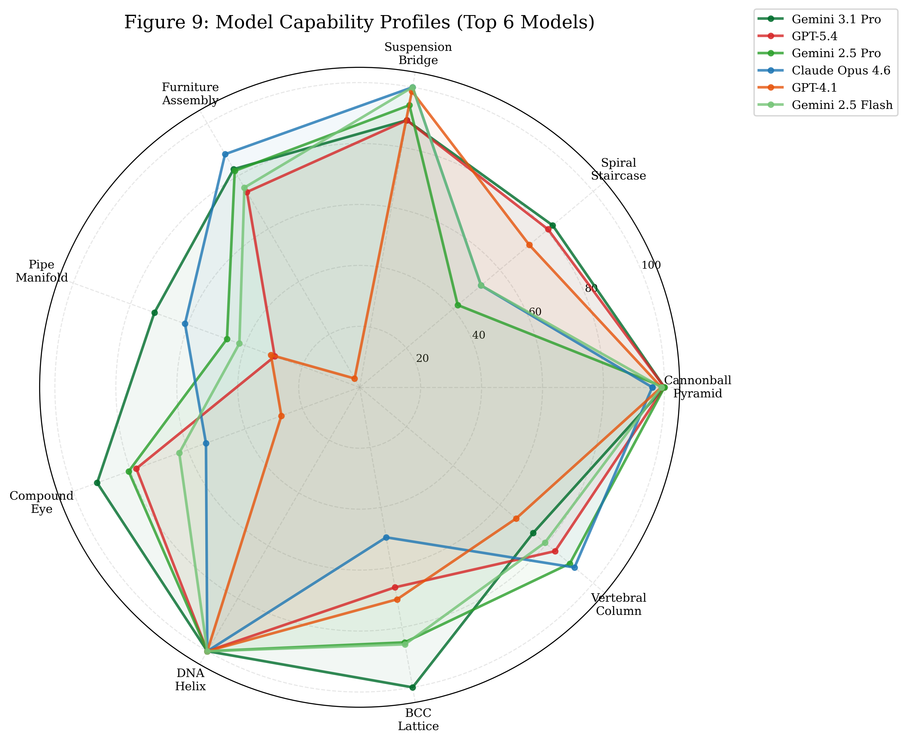
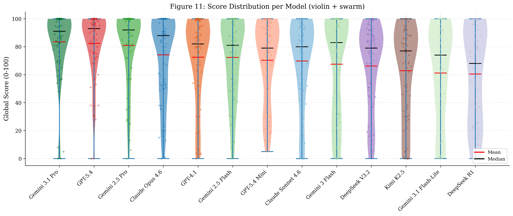
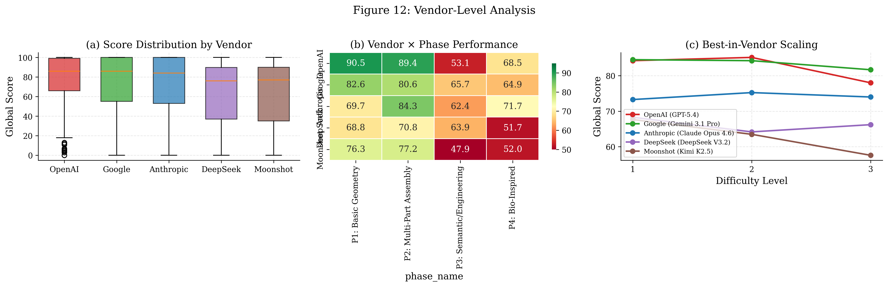

No code layer
Models emit a JSON array of primitives instead of a program. Correctness no longer depends on API fluency, import paths or execution environments.
We remove the code layer entirely. Models read natural-language engineering specifications and return deterministic JSON geometry, scored against parametric ground truth — no execution, no rendering, no shortcuts.
Existing benchmarks blend programming proficiency with geometric reasoning. C2CAD-Bench separates the two so that a syntactically correct script that places every part at the wrong coordinate no longer passes.
AI-assisted CAD design relies on a prompt-to-code-to-CAD pipeline, where an LLM generates code for a CAD engine from a natural-language description. Existing benchmarks combine programming proficiency with spatial understanding; reaching a syntactically correct script that places every part at the wrong coordinate passes all execution-based checks. Moreover, image-based evaluation cannot inspect internal geometry such as lattice connectivity or clearance fits.
We introduce C2CAD-BENCH, a benchmark that isolates 3D spatial reasoning from code-generation proficiency by removing the code layer entirely. Models receive a natural-language engineering specification and must produce a JSON array of geometric primitives, scored deterministically against parametric ground truth without code execution or rendering. Prompts follow a zero-scaffolding methodology that supplies only physical intent, requiring models to derive every coordinate from first principles.
The benchmark comprises 25 test families across four phases of cognitive demand (75 test cases, up to 805 shapes), evaluated with a gated three-axis scoring pipeline — Coverage, Geometry, and Semantic. Evaluation of 13 frontier LLMs from five providers reveals a persistent coverage–geometry gap of roughly 19 points, systematic primitive type confusion, and that constraint complexity rather than shape count drives difficulty.
A benchmark is only as good as what it isolates. We rebuilt the evaluation target around the part of the problem that actually matters: spatial intent.
Models emit a JSON array of primitives instead of a program. Correctness no longer depends on API fluency, import paths or execution environments.
A gated three-axis pipeline compares coverage, geometry and semantics against parametric ground truth. Every score can be recomputed from the same inputs.
Four phases move from single primitives to functional assemblies, exposing where constraint complexity — not shape count — breaks the reasoning chain.
| Dimension | Execution-based | Image-based | C2CAD-Bench |
|---|---|---|---|
| Signal evaluated | Program validity + output | Rendered appearance | Parametric geometry |
| Code required | Yes | No | No |
| Internal geometry | Limited | Not visible | Fully inspected |
| Scoring | Pass / fail or rendered similarity | Image metrics | Gated, deterministic, three-axis |
| Reproducibility | Environment dependent | Render dependent | Exact |
Each family contains three difficulty levels. Phase 1 focuses on primitives and repetition; Phase 4 pushes toward functional assemblies and extreme-scale patterns.
Primitive placement, repetition, radial patterns and basic constraints.
Tension, bridging, lattices and orbiting component relationships.
Multi-part assemblies, concentricity, clearances and functional grouping.
Algorithmic growth, organic geometry and cases with up to 805 primitives.
Eight landmark cases with high performance variance. Every viewport is live — drag to orbit.
Loading live benchmark geometry…
Scores are aggregated over all 75 cases. Expand any family to inspect the Coverage, Geometry and Semantic breakdown.
|
Loading evaluation data… |
Across 13 models, coverage is consistently easier than geometry. The gap widens with constraint complexity, and primitive confusion remains the dominant failure mode.
Mean coverage is 84% while mean geometry is 65%. Producing the right primitive types is markedly easier than placing them correctly.
Phase 1 and 2 averages sit near 80%, while Phase 3 and 4 fall to roughly 61–64% as clearances and dependency chains accumulate.
Models systematically substitute one primitive for another, then build a plausible but geometrically invalid assembly around the mistake.

Comparative evaluation of 13 frontier LLMs across all benchmark phases.

Decomposition of the three-axis score reveals a persistent coverage–geometry gap.

Assembly-heavy phases separate frontier models far more than foundational phases.

Constraint complexity, rather than raw shape count, drives the steepest drops.

Primitive substitution, coordinate drift and missing constraint propagation dominate.

Models with similar overall scores can have very different component strengths.

Average scores hide large per-case variance and catastrophic outliers.

Provider families show distinct trade-offs between coverage and geometric fidelity.
Scoring is deterministic and inspection-only. Each axis isolates a different failure mode, and geometric credit is gated by primitive matching.
Did the model produce every primitive implied by the specification?
Cov = matched / |GT|Are centers, dimensions, axes and orientations within tolerance?
Geom = 1 − normalized errorDoes each primitive carry the right role and participate in the right relationships?
Sem = weighted role matchIf this benchmark helps your work, please cite the paper.
@article{c2cad2026,
title = {C2CAD-Bench: A Large-Scale Benchmark for 3D Spatial Reasoning in CAD},
author = {Anonymous Authors},
journal = {arXiv preprint arXiv:26xx.xxxxx},
year = {2026}
}
The 3D visualizer lets you compare ground truth against any model, switch difficulty levels, and inspect the exact prompt behind each case.